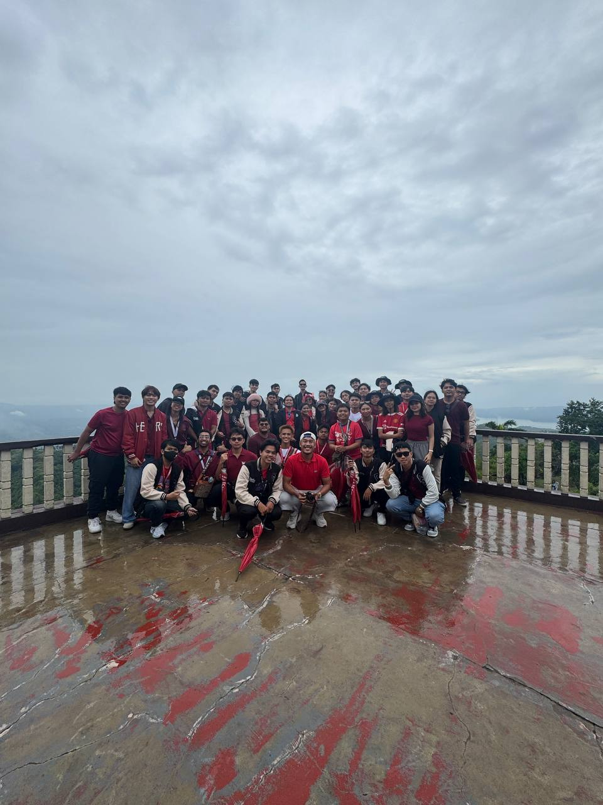

People’s Park in the Sky is one of those places where nature and nostalgia quietly meet. Perched on the highest point of Tagaytay, it gives you a bird’s-eye view of the surrounding landscape — misty mountains, the glistening Taal Lake, and distant rooftops of countryside homes. Though the park has aged over the years, that rustic, worn charm brings a sense of peace and reflection. Walking along its pathways with the cool breeze brushing your skin feels like a slow, meaningful pause from everyday life.
What stands out most is how time seems to slow down the moment you reach the summit. There’s no rush here — just a simple joy in being above it all. You’ll find people quietly gazing at the horizon, couples taking in the view, and families capturing memories with smiles. Despite its simplicity, the park holds a quiet power: it lets you breathe, reflect, and appreciate how beautiful the world looks from a little higher up.
Skyranch offers a different kind of thrill — one that’s loud, bright, and full of laughter. It’s the kind of place that immediately brings out your playful side, whether you’re riding the Sky Eye Ferris wheel or munching on cotton candy while watching kids run around. The lively colors, upbeat music, and smell of street food make it feel like a celebration. For a moment, it doesn’t matter how old you are — fun is the only thing that matters.
But even in all the excitement, there’s something magical about pausing at the top of a ride and seeing the beautiful Tagaytay view below. You’re reminded that joy doesn’t always have to be quiet — sometimes it’s found in screaming from a drop tower or laughing uncontrollably with friends. Skyranch is more than just an amusement park — it’s a reminder that we all need moments of carefree fun, especially when shared with the people who matter.


*Replace these images with your own from the Google visit.
Baguio City has a charm that greets you the moment you arrive, cool air, new kind of breezes, and a calm that’s rare in the city life we’re used to. The Mansion, with its classic white architecture and neatly trimmed gardens, feels like a postcard from a more elegant time. Walking near its gates, you can’t help but imagine the many important guests who’ve stepped foot there. Just nearby, Mines View Park offers a panoramic view of Cordillera’s mountain ranges, very breathtaking, especially with the early fog rolling in like a soft blanket.
Additionally, a stopped over was made at the Philippine Military Academy. YOu can feel the seriousness of the place and some of it's historic architectures and vehicle that was displayed in the park. As we explored deeper into Baguio, we found serenity in unexpected places. The Chinese Bell Church stood quietly in a corner of the city, welcoming us with peaceful courtyards and intricate details that spoke of tradition and faith. It wasn’t crowded — just calm and respectful, perfect for a short break from the usual tourist buzz. In contrast, Burnham Park was lively and full of energy, with bike rentals, paddle boats, and wide paths for strolling. It’s a place where strangers smile at each other, and where the sound of children laughing blends with the rustle of trees.
What makes Baguio special isn't just the attractions, it's how the city makes you feel. There's something about the balance of culture, nature, and local life that feels grounding. Whether you're enjoying street food near Session Road, shopping for woven crafts, or just sipping strawberry taho, every little experience becomes a memory you carry home. Baguio doesn’t just stay in your mind, it stays in your heart.


*Replace these with your actual images from the visit.
After days of industry visits and seminars, our leisure time in Tagaytay and Baguio gave us the chance to breathe, reflect, and simply enjoy being with one another. In Tagaytay, the cool air and peaceful views from People’s Park in the Sky felt like a well-deserved pause — a moment to appreciate the beauty around us and let go of stress. Skyranch, on the other hand, brought out our inner child. We laughed until our cheeks hurt, screamed on rides without holding back, and took countless group photos. It wasn’t just about having fun; it was about building memories that felt light and joyful — the kind that stay with you long after the ride ends.
Baguio was a different kind of peace. The long drives, pine trees, and cool breeze wrapped us in a calm we didn’t know we needed. Exploring The Mansion, Mines View Park, and Burnham Park reminded us that learning doesn’t always have to happen inside classrooms or company offices — it can happen while watching the fog roll over a mountain, or while biking with friends in the middle of a city park. These moments of rest brought us closer not just to the places we visited, but to each other. It reminded me that growth includes laughter, quiet walks, shared meals, and late-night conversations. Our leisure time was more than just a break — it was a beautiful balance to everything we learned, and a reminder of why these shared experiences matter so much.